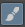

Krita pour l'animateur
Vous souhaitez vous lancer dans l'animation 2D sur ordinateur
mais vous n'avez pas envie de vendre votre rein pour acheter
une licence logiciel ?
Découvrez Krita, un formidable logiciel libre et
gratuit dédié à l'illustration et à l'animation.
Installer Krita
Krita est un logiciel libre d'illustration bitmap membre du projet KDE. Il est célèbre pour son grand nombre de brosses (et en particulier de brosses naturelles) et son interface qui se veut la plus pratique possible pour l'illustrateur.
Pepper and Carrot
est une BD en ligne réalisée intégralement avec Krita par David Revoy.
C'est un bon exemple de ce qu'il est possible de faire en illustration avec Krita.
Depuis sa version 3, lancée en mai 2016, Krita propose un module d'animation. Cela veut que les outils de dessin développés jusqu'à présent peuvent désormais être utilisés pour faire de l'animation 2D.
Pour installer la dernière version de Krita, rien de plus simple : rendez-vous sur cette page pour obtenir le fichier correspondant à votre système d'exploitation. Notez que, si vous êtes sous Linux, vous avez le choix entre un fichier AppImage (qui fonctionne sur toutes les distributions modernes) ou utliser votre gestionnaire de paquets (dnf, aptitude, pacman,…).
Dessiner avec Krita
Pour quelqu'un qui a déjà utilisé un logiciel d'édition d'image comme GIMP ou Photoshop, l'interface de Krita ne devrait pas poser de problème. Pour créer un nouveau fichier, tapez simplement Ctrl+N. Pour dessiner, on utilise l'outil Pinceau , disponible dans la barre d'outil de gauche.
Par défaut, vous avez accès à une brosse de base. La barre
d'options de l'outil Brosses vous permet de changer de couleur,
de changer de Preset  ,
de modifier l'opacité et le diamètre de la brosse,...
,
de modifier l'opacité et le diamètre de la brosse,...
Une des fonctions les plus pratiques de Krita est sa Palette qui apparait en faisant un clic droit n'importe où sur votre image. Elle vous permet de rapidement changer de couleur ou de preset.
Pour en savoir plus sur les outils de dessin de Krita, vous pouvez aussi lire ces articles de David Revoy ou regarder cette vidéo de GDquest (Nathan Lovato).
Passer en mode Animation
Pour l'instant, Krita n'affiche que son interface de base.
Pour afficher les outils d'Animation, choisissez l'espace de
travail  Animation dans le menu en haut à droite.
Animation dans le menu en haut à droite.

Animez !

Voici le panneau d'animation.
- Pour indiquer à Krita que l'on veut commencer notre animation, on clique sur le bouton Nouvelle Image .
- On peut ensuite dessiner la première frame dans la zone de dessin.
- Pour dessiner l'image suivante, on clique sur le bouton
Image suivante
 ,
puis sur Nouvelle Image
pour avoir une image vierge ou bien sur
Copier l'Image
,
puis sur Nouvelle Image
pour avoir une image vierge ou bien sur
Copier l'Image  pour obtenir une nouvelle image basée sur la précédente.
pour obtenir une nouvelle image basée sur la précédente.
La timeline
La timeline d'animation, c'est le nom donné à ce panneau (normalement en bas de votre fenêtre). Chaque rectangle bleu représente une image dans notre animation. Le rectange orange représente l'image actuelle.
On peut déplacer une ou plusieurs images dans la timeline, pour retarder leur arrivée par exemple, en la/les sélectionnant et en effectuant un drag-and-drop.
On peut avoir besoin de dupliquer une séquence d'images, par exemple pour une boucle qui se répète plusieurs fois. Pour cela, il suffit de maintenir Ctrl enfoncé tout en déplaçant les images en drag-and-drop.
La pelure d'oignon
La pelure d'oignon (onion skin en anglais), c'est une technique qui consiste à supperposer en transparence l'image précédente et l'image suivante lorsqu'on anime. Avant, on faisait cela avec une table lumineuse. Mais c'est aussi possible aussi avec Krita.
Pour activer l'onion skin sur notre calque, il suffit
de cliquer sur la petite ampoule  à côté de son nom dans la timeline.
à côté de son nom dans la timeline.
Par défaut, les images précédentes apparaissent en rouge et les image suivantes aparraissent en vert. On peut changer cela dans l'onglet Pelure d'oignon du panneau d'animation.
En sachant tout cela, il ne vous reste plus qu'à animer, en vérifiant régulièrement la qualité de votre animation avec le bouton Play .

Et maintenant…

Lorsque vous pensez avoir terminé votre animation, il ne reste plus qu'à l'exporter. Depuis sa version 3.1, Krita intègre un module de rendu. Dans le menu Fichier, choisissez Render Animation. Dans la fenêtre qui s'ouvre, sélectionnez :
- le dossier dans lequel Krita va stocker les images de l'animation (Render location),
- la frame de début et la frame de fin,
- l'option Render pour obtenir un fichier vidéo,
- le format de la vidéo (GIF, OGG, MP4,…),
- Delete Sequence after rendering si vous ne souhaitez conserver que le fichier vidéo.